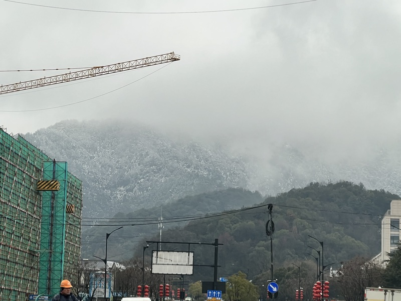
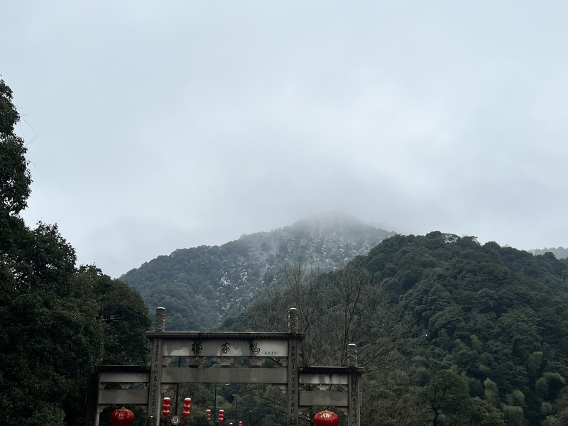
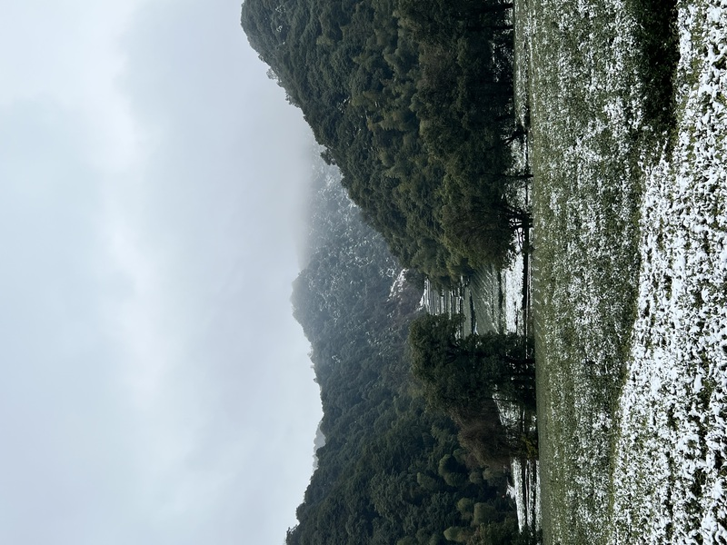
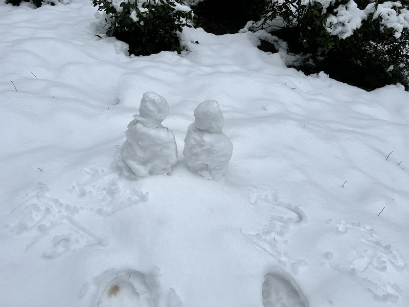
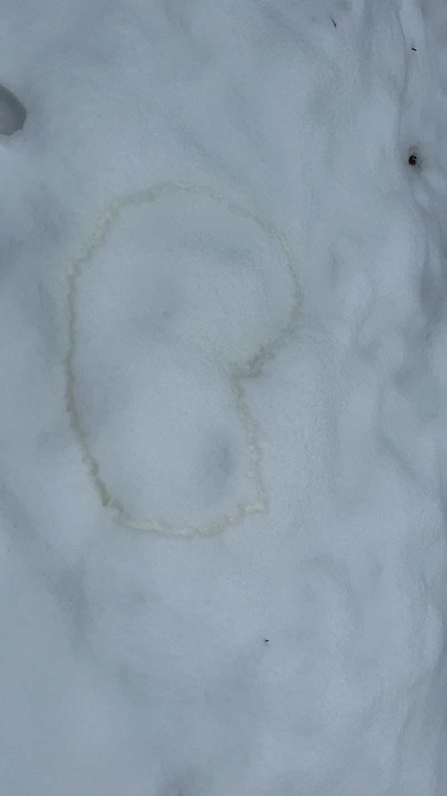
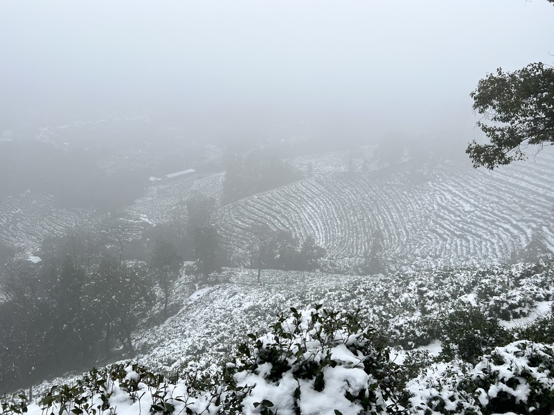
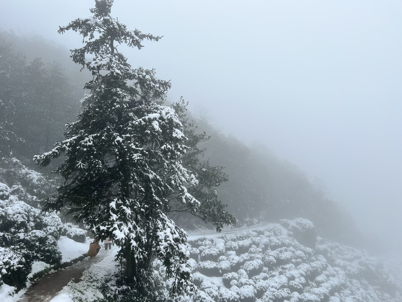
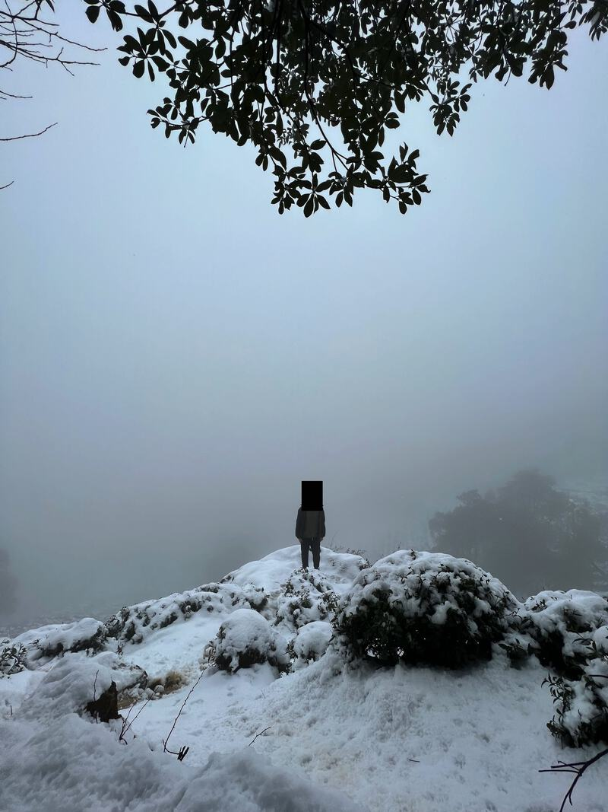
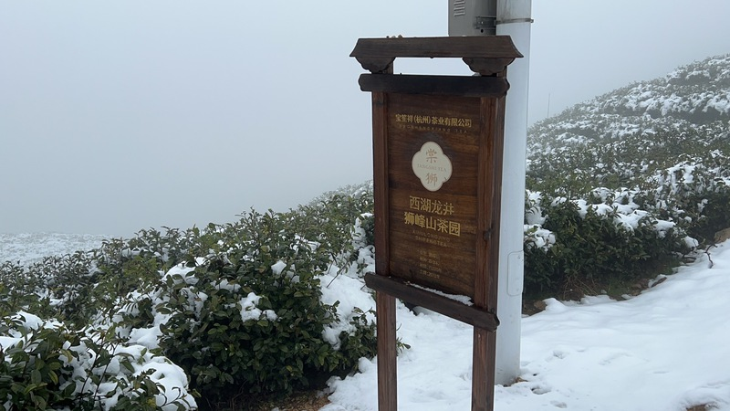
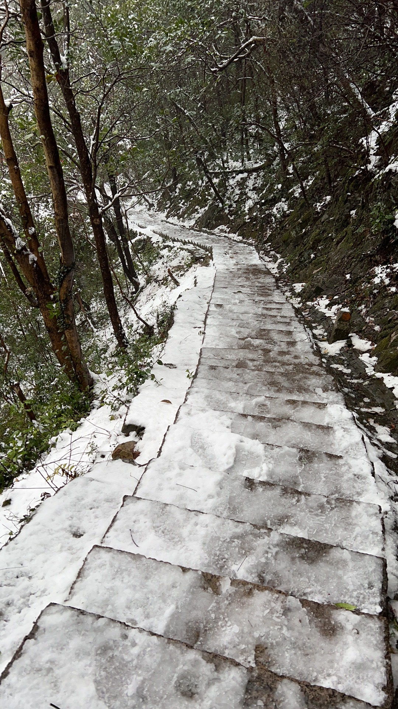

昨天杭州下了虎年的第一场雪，在南方雪是最让人快乐的天气，所以趁着雪还没化，去赏一下杭州的雪景。
开车即将进入灵溪隧道时，远处山上斑驳的积雪，缭绕的云雾已经让人充满了期待。

快到法喜寺时，路边潺潺的溪水，在绿树、青草、白雪之间流淌。

来到法喜寺，可惜疫情原因寺院不开放，只能在门口遐想黄墙白雪相映的美景。

只能再度启程寻觅雪景，前往云栖竹径，一路积雪见少，看来杭州由于海、西湖、山脉的相互作用，整个城市几片气候大不相同，估计有几度的温差。


回忆起去云栖竹径路上有经过一处小道有着较厚的积雪，查了地图发现通往海拔358米的狮峰，感觉可能有惊喜，遂驱车前往，时后果然有惊喜。

爬到海拔100米后，开始只有小道了，风景也更为自然，雪层也愈厚。

兴之所至，堆了俩雪人，画了个爱心以作留念。


雪路漫漫。


终至顶峰。

在山顶看着梯田上的茶园覆盖着白雪的美景，宛若一座座白色的台阶，层层叠叠，直上天际。

山顶挂着雪的松树，虽没有雾凇那么夺睛，但也是美不胜收。

最后，打卡留念。


上山容易，下山难，上山的路充满期待，下山的路十步一滑。
之前学过那么多咏雪的诗句，但现在记忆最深刻的却是
"黄狗身上白，白狗身上肿"
贴切，风趣。果然还是俗的更深入人心: )
